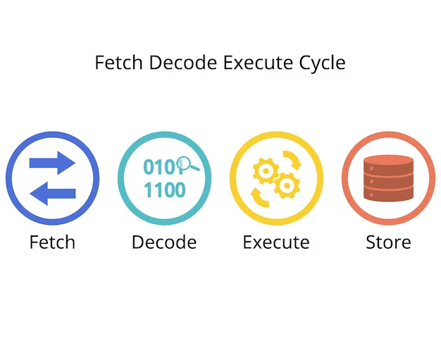

CPU
Zoals je ook waarschijnlijk hebt gezien heb ik al een kleine uitleg gegeven over de CPU.
De processor, eigenlijk het brein van de computer doet allerlei verschillende dingen.
Ik zeg wel de hele tijd CPU maar waar staat het eigenlijk voor?
CPU samenvatting
De afkorting CPU is Central Processing Unit.
Het is een van de belangrijkste onderdelen van de computer.
Zonder de CPU zou een computer niet in staat zijn om te functioneren, omdat hij verantwoordelijk is voor het uitvoeren van alle instructies die door programma's en het besturingssysteem worden gegeven.
Simpel gezegd: zonder CPU zou een computer geen enkele taak kunnen uitvoeren, van simpele handelingen zoals het openen van een bestand, tot het draaien van games voor vermaak.
Je weet nu, de CPU is dus echt heel belangrijk.
Daarom is het best interessant om daar wat dieper op in te gaan.
Deze slimme chip doet alle namelijk allerlei verschillende belangrijke denkwerk: het berekent, beslist en zorgt ervoor dat alles soepel loopt.
De CPU bestaat uit kleine schakelingen die enorm snel werken.
De CPU werkt in een constant proces van het ontvangen en verwerken van opdrachten.
De 4 basisstappen
Dit proces, ook wel de instructiecyclus genoemd, bestaat uit vier basisstappen:
1. Fetch (ophalen): De CPU haalt een instructie op uit het RAM-geheugen, waar programma’s tijdelijk worden opgeslagen.
2. Decode (decoderen): De opgehaalde instructie wordt ontcijferd, zodat de CPU begrijpt welke taak uitgevoerd moet worden.
3. Execute (uitvoeren): Nu de instructie is begrepen, voert de CPU de bijbehorende taak uit, bijvoorbeeld een rekensom.
4. Store (opslaan): Het resultaat van de uitgevoerde taak wordt vervolgens opgeslagen, meestal in een register, een klein en supersnel geheugen in de CPU.

Deze vier stappen worden in een razendsnel tempo herhaald, waardoor de CPU miljarden opdrachten per seconde kan verwerken.
Mega snel dus!
Extra
Moderne CPU's hebben vaak meerdere kernen die tegelijkertijd taken kunnen uitvoeren. (verbetert ook het multitasken)
Daarnaast maakt de CPU gebruik van cachegeheugen (L1, L2, L3) om snel toegang te hebben tot vaak gebruikte gegevens.
Dit versnelt de prestaties enorm.
Al met al is de CPU dus enorm belangrijk voor het gebruik.